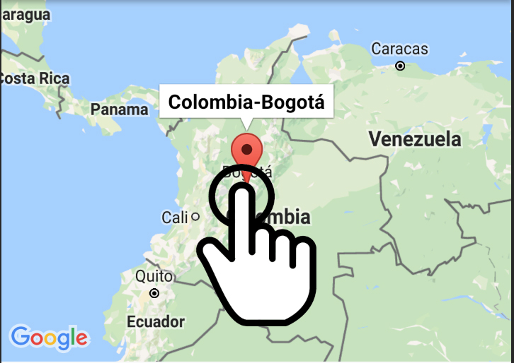
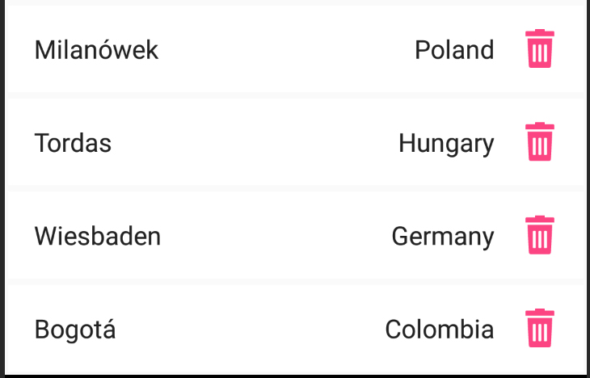
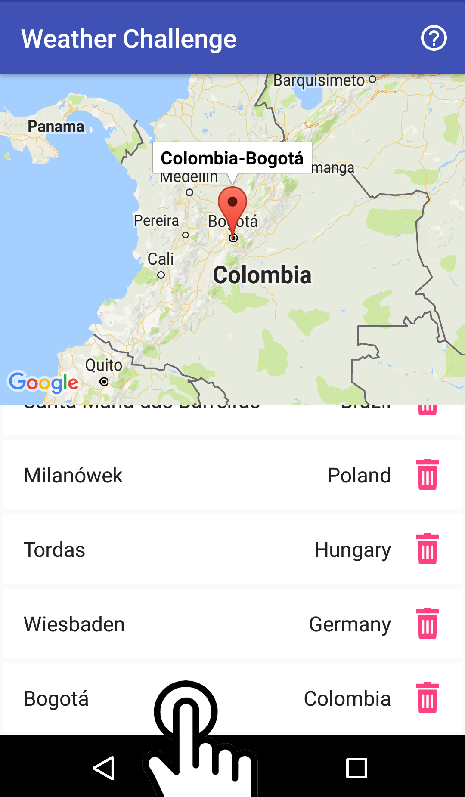
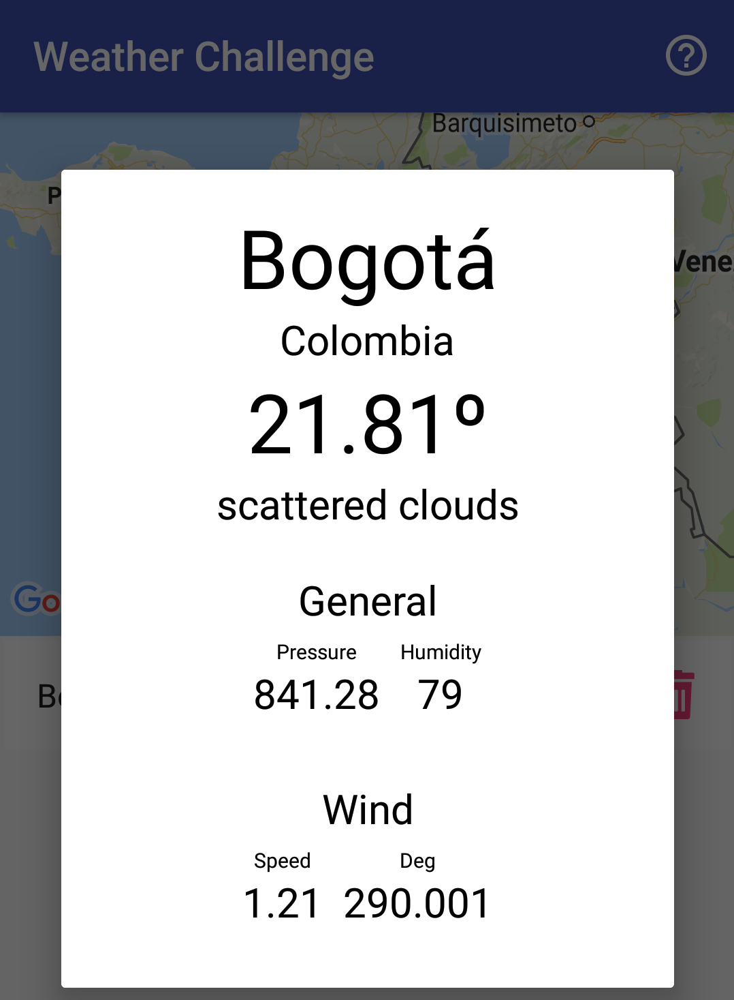
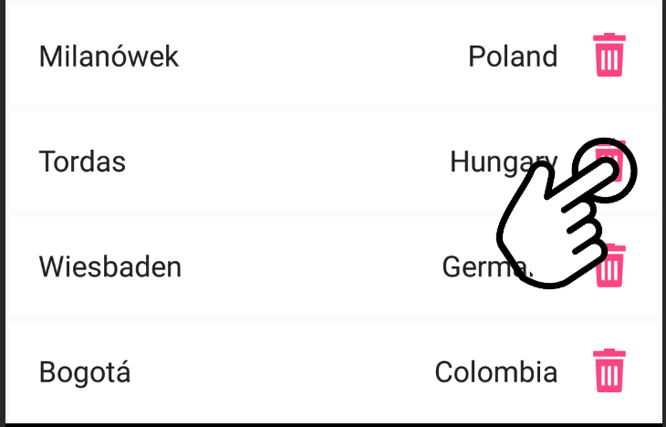

Application Tutorial
What it is?
This App read the current forecast and its detail on any place of world.
How to use it?
1. Touch any area of the map to bookmark the city in the map.

2. Each bookmarked city will be listed.

3. If you touch the list item will display a dialog showing the current forecast of the city.

3. The forecast screen will show the current temperature and wind details of the city.

How to remove a bookmark?
In the bookmark list press the remove icon on each row in the right side to remove the bookmark from the list and the map.
